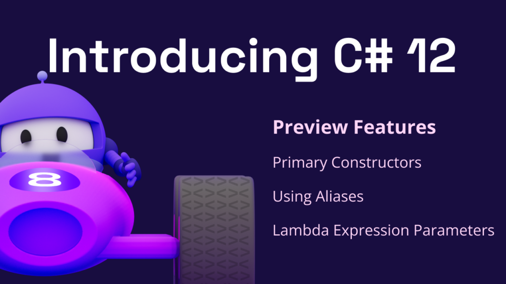

C# 12 😲
Ushbu qismda qismda C# 12dagi eng 🆒 featurelarni ko'rib chiqamiz.
⭐ Primary Constructor
class va struct tiplarini elon qilishda bira to'la endi asosiy konstruktor berib ketsa bo'ladi. Primary Constructor orqali yuborilgan obyektlar klass hududi bo'ylab ko'rinadi.
Tip
Primary constructor orqali yuborilgan obyektlar class memberi emas aksincha parametr ekanini yoddan chiqarmaslik kerak. Ularni this kalit so'zi orqali chaqirib bo'lmaydi.
struct misolida.
public readonly struct Nuqta(int x, int y)
{
public readonly int X => x;
public readonly int Y => y;
}
ota classga ma'lumot uzatish.
public class Ustoz(int id, string ism) : Ishchi(id)
{
public int Id => id;
public string Ism => ism;
}
Va eng keraklisi dependency injection.
public interface IService
{
Distance GetDistance();
}
public class ExampleController(IService service) : ControllerBase
{
[HttpGet]
public ActionResult<Distance> Get()
{
return service.GetDistance();
}
}
💡 Collection Expressions
Endi to'plamlarni e'lon qilishda new kalit so'zini ishlatishni hojati yo'q 😲.
int[] sonlar = [1, 2, 3, 4, 5];
List<string> ismlar = ["Ali", "Vali", "Hasan"];
double[] qator1 = [1, 2, 3];
double[] qator2 = [4, 5, 6];
// ko'p o'lchamli array yasash
double[][] jadval = [qator1, qator2, [7, 8, 9]];
💣 Spead Operator
Agar yuqoridagilari hali miyyangizni portlatmagan bo'lsa unda bunisiga qarang.
Spread Operator .. yordami mavjud to'plamlarni yangi to'plamga osonlik bilan qo'shing!
string[] qizlar = ["Madina", "Hadicha", "Aisha"];
string[] yigitlar = ["Umar", "Ali", "Abubakr"];
string[] hamma = ["Wahid", ..yigitlar, ..qizlar];
// hamma = ["Wahid", "Umar", "Ali", "Abubakr", "Madina", "Hadicha", "Aisha"]
🌠 Default Lambda parameters
lambda expression elon qilishda endi uning parametrlariga default qiymatlarni berib ketsa bo'ladi.
var yuza = (int a, int? b = null) => a * (b ?? a);
Console.WriteLine(yuza(5)); // 25
Console.WriteLine(yuza(5, 6)); // 30
Bu yangi feature eng ko'p ishlatilishi kutilyapkan yana bir misol.
app.MapGet("/users", async (IUserService service, int? page = 1, int? pageSize = 50) => { });
Tip
Yuqorida lambda expression yangi imkoniyatidan foydalanib Pagination uchun default qiymatlar berib ketilgan.